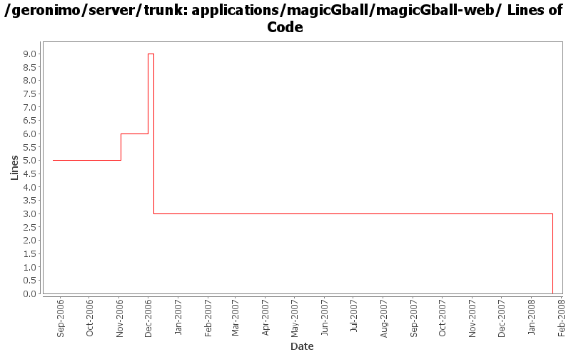

[root]/applications/magicGball/magicGball-web
 src
(0 files, 0 lines)
src
(0 files, 0 lines)
 main
(0 files, 0 lines)
main
(0 files, 0 lines)
 java
(0 files, 0 lines)
java
(0 files, 0 lines)
 org
(0 files, 0 lines)
org
(0 files, 0 lines)
 acme
(0 files, 0 lines)
acme
(0 files, 0 lines)
 webapp
(0 files, 0 lines)
webapp
(0 files, 0 lines)
 WEB-INF
(0 files, 0 lines)
WEB-INF
(0 files, 0 lines)
 site
(0 files, 0 lines)
site
(0 files, 0 lines)

| Author | Changes | Lines of Code | Lines per Change |
|---|---|---|---|
| Totals | 12 (100.0%) | 11 (100.0%) | 0.9 |
| jlaskowski | 1 (8.3%) | 6 (54.5%) | 6.0 |
| kevan | 1 (8.3%) | 3 (27.3%) | 3.0 |
| jdillon | 8 (66.7%) | 1 (9.1%) | 0.1 |
| dain | 1 (8.3%) | 1 (9.1%) | 1.0 |
| pmcmahan | 1 (8.3%) | 0 (0.0%) | 0.0 |
(GERONIMO-3747) Moved applications/* to plugins/*
0 lines of code changed in 3 files:
GERONIMO-2628 - upgrade to tomcat 6.0.2 beta
changes:
* modules/geronimo-tomcat
** add repository http://people.apache.org/~pmcmahan/maven2/ to pom
*** this will be removed when tomcat publishes v6 artifacts
** update pom to use tomcat 6.0.2 beta jars
** remove outdated clustering (o.a.g.tomcat.cluster)
** update resources in src/main/resources/META-INF/geronimo-tomcat/var/catalina
** update dependencies in src/main/resources/META-INF/geronimo-dependency.xml
** update test cases
** disabled a test case that fails intermittently
* modules/geronimo-tomcat-builder
** remove outdated references to clustering support
** update test cases
* configs/tomcat
** add repository http://people.apache.org/~pmcmahan/maven2/ to pom
*** this will be removed when tomcat publishes v6 artifacts
* configs/webconsole-tomcat
** remove dependencies on jasper-runtime from pom.xml and plan.xml
* configs/jee5-specs
** use servlet 2.5, jsp 2.1, el 1.0, annotation 1.0
* configs/tomcat-deployer
** update pom.xml to use new web25-builder
* assemblies/geronimo-tomcat-j2ee
** rename to geronimo-tomcat-jee
* test cases
** add new unit test for servlet 2.5 to geronimo-tomcat
* remove unnecessary reference to jasper-runtime from poms using jspc-maven-plugin
** console
** demo
** ca-helper
** jsp-examples
** ldap-demo
** remote-deploy
** uddi-server
** welcome
** magic GBall
0 lines of code changed in 1 file:
GERONIMO-2537 Merge from branches/1.2 onto trunk. I have not reviewed trunk license info. So, it's possible that there are already some deltas which should be reflected in license/notice files. This change updates the general LICENSE.txt and NOTICE.txt files. Note that I've expanded the notice/license files in the root of a source distribution. Also added required copyright to NOTICE.txt files. Note that minimal distributions have an overly broad license/notice files. Also, we have multiple copies of the same general license/notice files. Would be good to reduce these.
3 lines of code changed in 1 file:
Changed version to 2.0-SNAPSHOT
1 lines of code changed in 1 file:
GERONIMO-2537 All Geronimo source files must be brought in line with the new ASF source header and copyright notice policy
Fix for applications
6 lines of code changed in 1 file:
Using ${version} instead of ${pom.version} in a feeble attempt to get around ${pom.version} changing to its timestamp version for SNAPSHOT artifacts
1 lines of code changed in 1 file:
(GERONIMO-2331) First round of m2 layout standardization, includes most modules (except j2ee-builder and j2ee-schema)
0 lines of code changed in 4 files: